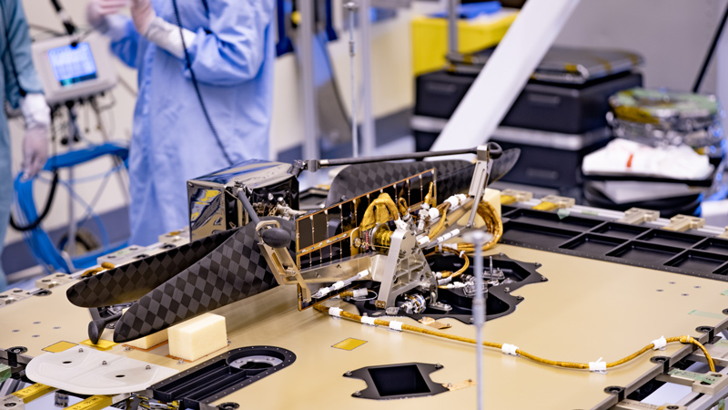
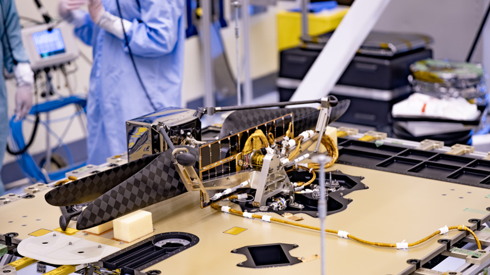
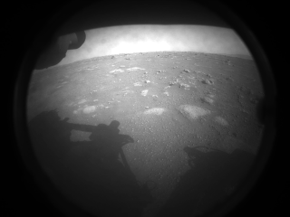
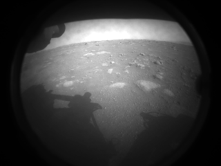
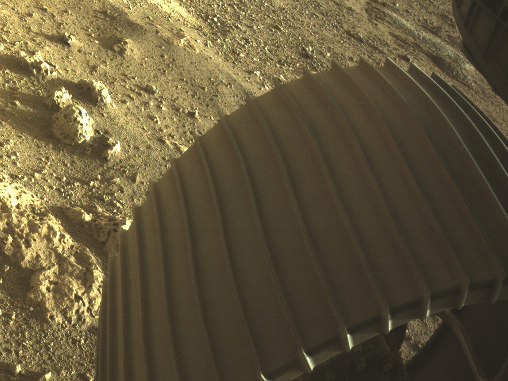
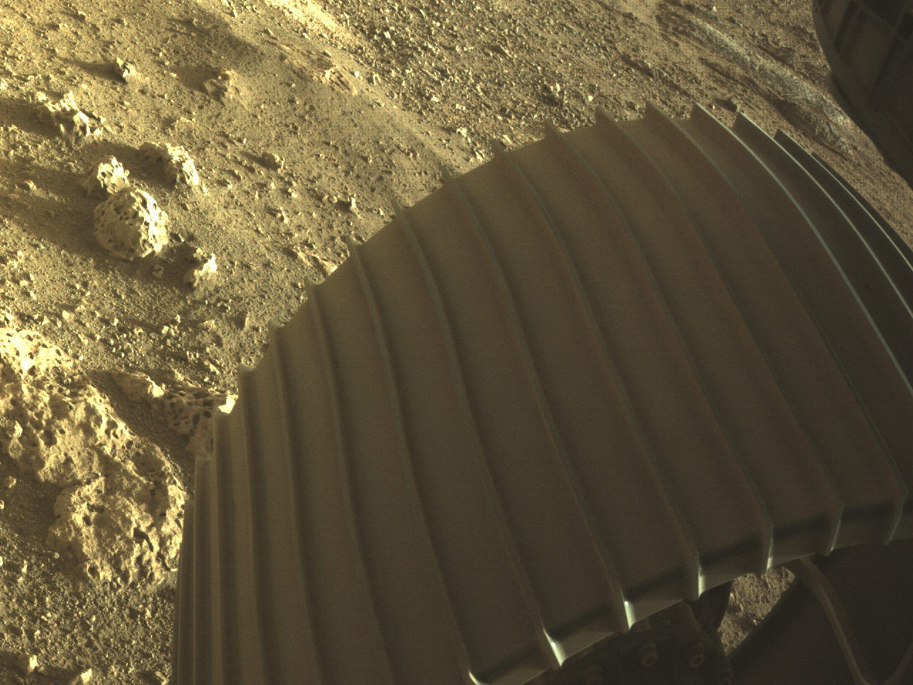

Perseverance

| Név | Perseverance |
| Súly | 1025 Kg |
| Hely | Jezero kráter |
| Kilövés | 2020 Július 30 |
| Érkezés | 2021 Február 18 |
| Küldetés vége | Folyamatban |
| Név | Perseverance |
| Súly | 1025 Kg |
| Hely | Jezero kráter |
| Kilövés | 2020 Július 30 |
| Érkezés | 2021 Február 18 |
| Küldetés vége | Folyamatban |
A Perseverance rover tervezésébe besegített a Curiosity mérnök csapata, mivel a hasonló funkciók miatt a két rover eléggé hasonlít egymásra. A Perseverance kerekeit robusztusabbra tervezték, a Curiosity tapasztalatai alapján, aminek kerekei sérüléseket szenvedtek. A kerekek vastagabbak és átmérőjük nagyobb (52,5 cm - ami a Curiosity esetében 50 cm volt), szélességük kisebb, anyaguk dur-alumínium. A kerekeken stopli
van a jobb tapadás érdekében. Küllői részben titánból vannak. A nagyobb műszerezettség miatt a Perseverance tömege 17%-kal nagyobb, mint elődje, a Curiosity tömege volt (899 kg helyett 1050 kg).
A rover rendelkezik egy 2,1 méter hosszú, öt ponton hajló robotkarral. Ez egy toronyhoz van erősítve, és a marsi talajról származó geológiai minták begyűjtésére szolgál.
A rover számára egy 45 kg tömegű RTG generátor biztosítja a villamos teljesítményt, ami 4,8 kg plutónium-oxidot visz magával, amely a tervek szerint 110 watt elektromos teljesítményt tud leadni (ez egy év alatt pár százalékkal csökken). Két lítiumion-akkumulátor is tartozik a berendezéshez, amelyeket a generátor tölt, ezek az egyszerre jelentkező csúcs-energiaigények kielégítésére szolgálnak. Az RTG tervezett működési élettartama 14 év. Azért esett RTG-re a választás, mert a napelemek kevésbé kiszámíthatóan működnek: éjszaka nem termelnek áramot, működésüket visszaveti egy-egy homokvihar (ami a Marson esetleg hónapokig is eltart), továbbá télen kevesebb energiát adnak le.
A rover BAE RAD750 sugárzástűrő egykártyás számítógépet visz a fedélzetén. Ez 128 megabájt DRAM-ot tartalmaz, a processzor sebessége 133 MHz. A repülést irányító szoftver 4 gigabájt nem-felejtő NAND memóriát használ, ez egy külön áramköri lapon helyezkedik el.
A Mars 2020 küldetés része egy Ingenuitynek nevezett Mars helikopter
kísérlet. A helikopter lényegében egy drón, amelyet saját napelem lát el árammal. Össztömege mindössze 1,8 kg. Feladata a stabil repülés megvalósíthatóságának vizsgálata. Tudományos műszereket nem visz magával, mindössze kamerákat, amikkel jó esetben fel tudja deríteni a rover tervezett haladási útvonalát. Működését 30 naposra tervezték.
A leszállás folyamata teljesen automatikusan zajlik.
A szonda nagyjából 100 km magasságban lép be a Mars ritka légkörébe. Ekkor nagyjából 20 000 km/h sebességgel halad. A szondának 1 m/s sebességre kell lelassulnia, amikor eléri a felszínt, hogy ne sérüljön meg. A lassítás nagy részét a hőpajzs végzi, ami eközben akár 1000 °C-ra is felhevülhet. Amikor ereszkedés és fékezés közben a sebesség 1200 km/h-ra csökken, kinyílik a szuperszonikus ejtőernyő. Ez a 21,5 m átmérőjű ejtőernyő mindössze egy percig működik. 2 km magasságban, 100 m/s sebesség mellett a Perseverance rover és az égi daru
> leválik a szonda többi részéről. A darun nyolc hajtómű működik, amik a pozicionálást végzik. Erről műanyag köteleken lógatják le a később majd a felszínen mozgó rovert. Amikor a rover eléri a talajt, a daru leválasztódik, arrébb repül, majd a földbe csapódik. A leszállás idején a Mars-Föld aktuális távolsága miatt a kommunikáció 11,7 percet vesz igénybe egy irányba, azaz a jelek ennyi idő alatt érnek le a Földre.
 

 

 
